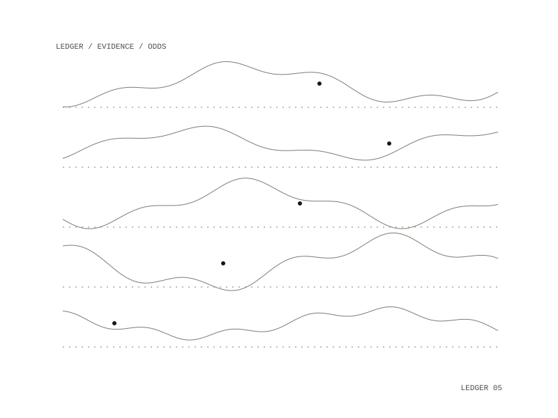

Prediction
Prediction is designed as an independent forecaster for prediction-market questions. It builds a base rate from comparable cases, works out the current procedural state of the specific question, produces a probability, updates only on cited evidence, and keeps a ledger against which its own calibration can be scored. It is meant to inform a trade and never place one.

Three design rules
- The ledger is to be append-only: every forecast and revision is to be a new timestamped entry with the prior probability, the new one and the reason, so past forecasts cannot be rewritten.
- No probability is to move without a named, dated, resolvable source, such as a bill action, a vote record, a published statement or a calendar change.
- The base rate is to come first: each question is to start from a recorded reference class and its historical rate, kept visible next to the final number.
What a revision records
Each revision is designed to list the previous and new probability, the reason, the evidence, the market probability and the difference between the two. Over resolved questions the ledger is designed to give a Brier score and a reliability curve, so the track record can be checked.
Calibration in code
The design uses a model's reasoning plus an explicit statistical layer, with no fine-tuning: calibration is a correction fitted over the ledger after the fact, kept in code where it can be audited. To keep the forecast independent of the market, the design is to forecast first and fetch market odds second. The design holds no exchange credentials and has no order path; market data is read only.